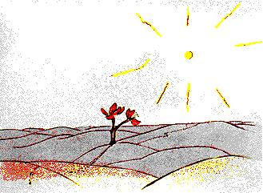

XVII
Thriall an prionsa beag ó cheann ceann an fhásaigh agus níor
casadh air ach aon bhláth amháin. Bláth thrí bpiotal, bláithin
beag bídeach gan aird.....
- Go mbeannaí Dia duit, arsa an prionsa beag.
- Dia agus Muire duit féin, arsa an bláithín.
- Cá bhfuil na daoine? a d'fhiafraigh an prionsa beag go
béasach.
Bhí an bláth i ndiaidh carbhán a fheiceáil ag dul thart lá
amháin:

-Na daoine? Tá, creidim, seisear nó seachtar acu ann. Fuair mé
spléachadh orthu na blianta ó shin. Ach níl a fhios agam in am ar
bith cá bhfuil fáil orthu. Siabann an ghaoth roimpi iad. Níl
fréamhacha ar bith acu, agus is mór an bac orthu an méid sin.
- Slán agat, a deir an prionsa beag.
- Slán leat, a dúirt an bláth.